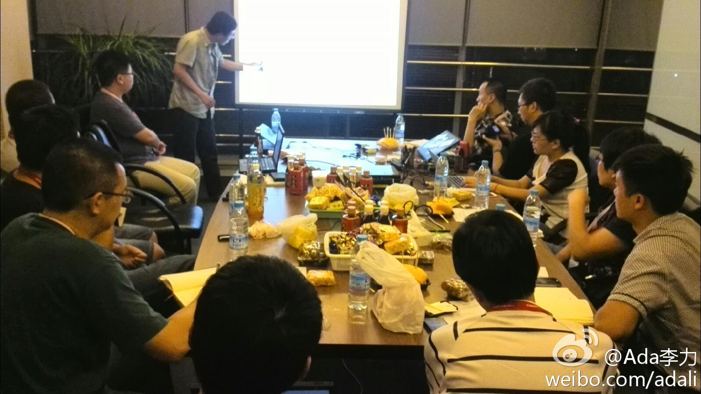
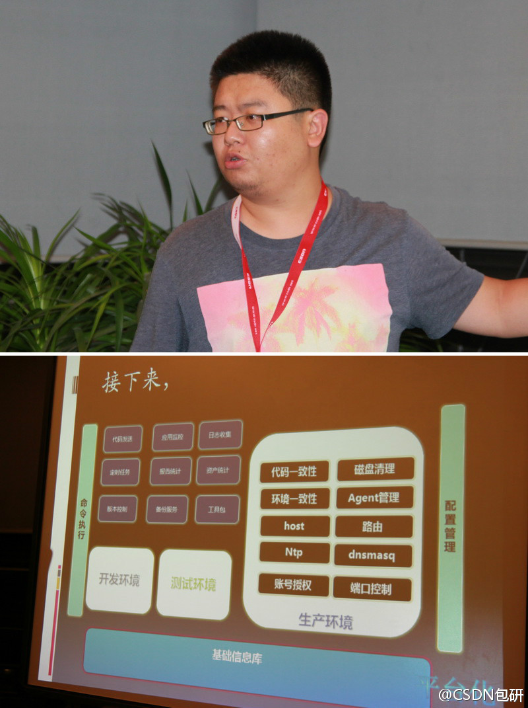

社区里话题容易沉淀，但关系就不太容易沉淀。@每日打开:垂直社区产品更有潜力，强话题、弱关系，以话题为中心。社交产品强关系，强调人与人之间的关系作为切入点和发展轨迹。话题永远不会消亡，但关系却会变化。移动互联网时代，用户通过手机交流将成为一种新的方式，但交流的方式中，社区依然是最可以沉淀，最有价值的。做社区，还是以关系和话题为中心。
#社区运营#不好做。//@郑几块: 为什么创业者热衷于社交产品，而鲜有人顾及社区产品，还有一个重要的原因，是社区产品是个慢热型的产品形态，需要不断的运营、发展，形成自己的社区文化。它不像社交产品，通过用户关系，形成病毒式传播，可以快速的火爆。当然，这样也更容易引起资本的关注。@每日打开:社交产品和社区产品，都强调的是人与人的关系。社交产品有个很大的优势是前期可以制造新鲜感，充分调动用户的好奇心理，好玩！关系是一个人生活必不可少的工具但不是目的，没有人会纯粹为了强化关系而维护关系，维护关系的动力难以持续。
回复@frankjiagq:只要产品让用户汇集，交流，沉淀下内容或关系，都算社区产品。 //@frankjiagq:有个问题我一直没想明白，线上的社区产品应该是什么形态呢？论坛？问答？还是…@Ada李力:#社区运营#越大的社区越不好做运营，因为那些有独特而强烈价值观的社区更容易吸引到忠诚度很高的粉丝，这类社区规模都很小。而社区一但大起来，众口难调的结果就会造成中庸和平庸的气质。
小圈子的活动人数要少，空间可以小些，这样会有更好的交流和讨论氛围。今晚是第二期运维活动，策划人@CSDN包研 也在照片中，俱乐部负责人@CSDN-郭小铲 没入镜，在会议室后面坐着呢。@CSDN云计算俱乐部 第7期-- 运维晚间咖啡 - CSDN.NET 网页链接 我在这里:北京·福码大厦 
回复@CSDN包研:CSDN的会议室，晚上和周末的时间都可以免费借给技术社区办活动哈。 //@CSDN包研:开放的 网页链接@Ada李力:小圈子的活动人数要少，空间可以小些，这样会有更好的交流和讨论氛围。今晚是第二期运维活动，策划人@CSDN包研 也在照片中，俱乐部负责人@CSDN-郭小铲 没入镜，在会议室后面坐着呢。@CSDN云计算俱乐部 第7期-- 运维晚间咖啡 - CSDN.NET 网页链接 我在这里:北京·福码大厦
回复@自以为是的小号手:也有把运营看成是花钱的公司。 //@自以为是的小号手:运营是为挣钱的，运维是花钱的@Ada李力:曾经有人问我运营和运维有什么区别。区别大了去了，运维管的是服务器，数据库，网络设备这些东东。运营面对的单个的人和聚合起来的人群。 我在这里:网页链接
现在人人都谈体验，这对用户来说是好事情。[呵呵]@包研Ant:#运维晚间咖啡# @平凡的香草 同学分享了运维工程师的五大成长利器：读文档 做测试 搞监控 记日志 长教训。同时，他认为“运维工作要深入到应用逻辑里”，为用户的体验负责。@CSDN云计算俱乐部
转发微博@技术分子JZ:SlideIdea今天终于在San Francisco Design Center成功发布了!SlideIdea承载了我们在教育传播领域很多梦想,也走过很多弯路,今天终于达到一个里程碑.虽是Startup,却得到许多硅谷媒体包括TechCrunch,Technorati和RBC等的关注,及众多用户的认可.SlideIdea下载链接:网页链接 感谢大家转发支持!
这些措施不错。@199IT-互联网数据资讯网:【卡内基梅隆大学计算机系如何把女生比例从7%提高到42%】计算机专业在全美排名第一，但1995年新生女生仅7%。系副主任和社会学家一起努力，2000年成功把新生小师妹提高到42%，获得高年级师兄一致赞誉。 怎么做的呢？：把"魔爪"伸向中学，录取过程"做手脚"，新生课程"偷梁换柱"， 鼓励女生"拉帮结派"。
王哲同学的微博ID好霸气。@包研Ant:#运维晚间咖啡#要做好公司内部基础资源的平台化（PaaS），@秦始皇 同学认为首先要把每台服务器的关系搞清楚（组织结构，业务，服务），其次把每台服务器打上标签，最后收集具体服务详细信息（如MySQL的版本，端口，如何与业务对接）。@CSDN云计算俱乐部 
上下班路上听中西文化对比，演讲者牵强附会，简直是误人子弟，就比如他说西方思维是线条，而中国思维是立体的，理由是西方文字是字母，汉语用的是方块字。又说西方文化只有两面，非彼即此，而中国文化宽容，阴阳就是你中有我，我中有你…… 听得我简直要在车里骂狗屁，停车立即删除手机上文件。